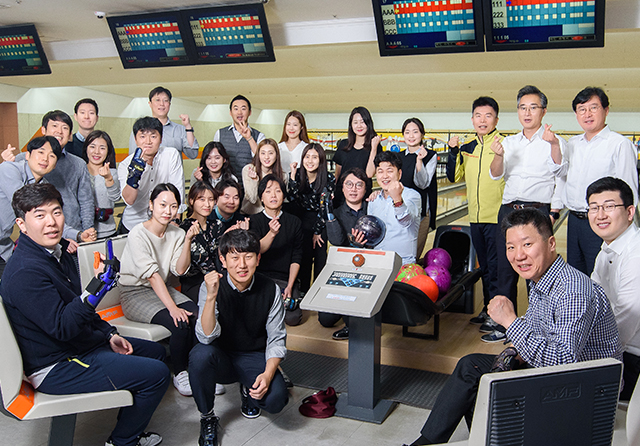
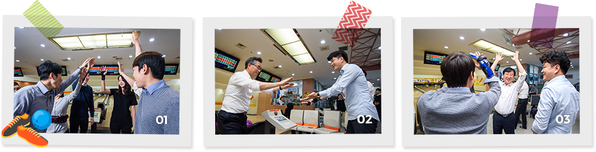
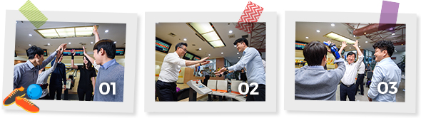
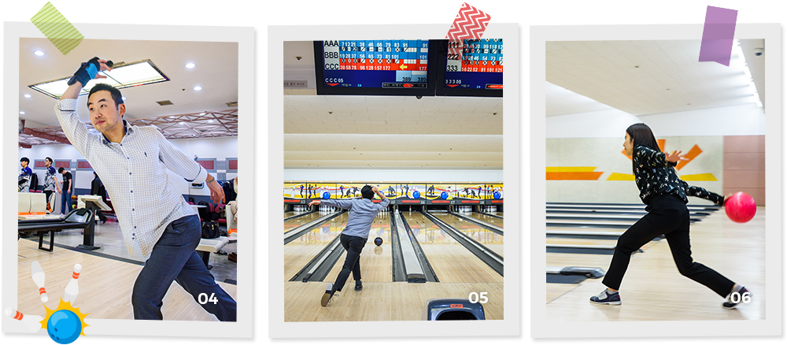
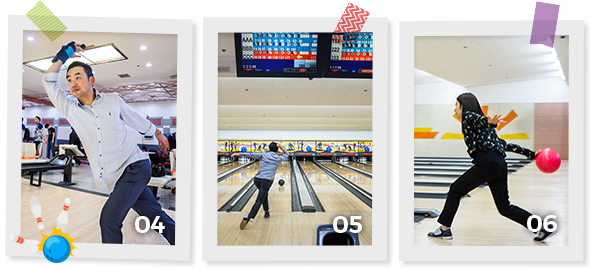
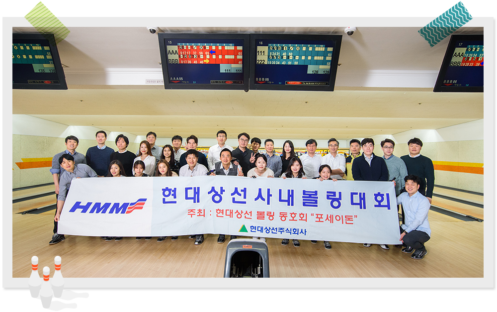
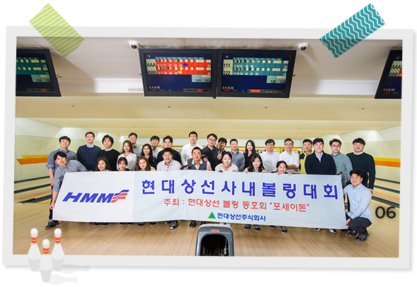

와 제 롤모델이 잡스에요!!! 아이폰 첫 출시되고 나서부터 계속 아이폰 쓰고 있는데 잡스가 너무 그리워요ㅠㅠ 지금은 돈만 벌려고 하는 것 같아서 디자인 발전도 없고ㅠㅠ와 제 롤모델이 잡스에요!!! 아이폰 첫 출시되고 나서부터 계속 아이폰 쓰고 있는데 잡스가 너무 그리워요ㅠㅠ 지금은 돈만 벌려고 하는 것 같아서 디자인 발전도 없고ㅠㅠ와 제 롤모델이 잡스에요!!! 아이폰 첫 출시되고 나서부터 계속 아이폰 쓰고 있는데 잡스가 너무 그리워요ㅠㅠ 지금은 돈만 벌려고 하는 것 같아서 디자인 발전도 없고ㅠㅠ와 제 롤모델이 잡스에요!!! 아이폰 첫 출시되고 나서부터 계속 아이폰 쓰고 있는데 잡스가 너무 그리워요ㅠㅠ 지금은 돈만 벌려고 하는 것 같아서 디자인 발전도 없고ㅠㅠ와 제 롤모델이 잡스에요!!! 아이폰 첫 출시되고 나서부터 계속 아이폰 쓰고 있는데 잡스가 너무 그리워요ㅠㅠ 지금은 돈만 벌려고 하는 것 같아서 디자인 발전도 없고ㅠㅠ
HMM 에세이
2018 사내볼링대회 개최
속 시원한 스트라이크로
활력 ‘팍팍’
활력 ‘팍팍’

해가 부쩍 짧아진 11월의 끝자락. 볼링 동호회인 ‘포세이돈’의 주최로 2018 사내볼링대회가 열렸다.
그동안 정모를 통해 꾸준히 실력을 다져온 볼링 동호회원들은 물론, 회원은 아니지만 볼링에 관심이 있는 많은 현상인이 참가해 자리를 빛냈다.
사내볼링대회의 현장을 지면으로 만나보자
글
송선홍 사원(경영지원팀)
사진
김선재
한 해를 결산하는 사내볼링대회
매년 연말이면 열리는 사내볼링대회는 볼링을 사랑하는 사람들이 모여 3인 1조 팀 대항전으로 이루어진다. 사내볼링대회는 한 해를 결산하는 이벤트로써 1년에 한 번 있는 대회이니만큼 포세이돈의 중요한 연례행사이다. 올해 열린 대회에는 총 10개 팀의 30명이 참가하여 우승을 목표로 경쟁했다.
퇴근 후 종로 소재의 비원볼링장으로 삼삼오오 모여든 참가자들. 볼링 동호회 회원들은 저마다 다양한 장비를 뽐내며 대회에 대한 기대감을 드러냈으며, 대회를 앞둔 만큼 평소 보다 힘이 잔뜩 들어간 듯 보였다. 혹여 긴장으로 실력 발휘를 하지 못할까 염려하는 사람들과 이를 응원해 주는 사람들로 볼링장은 시끌벅적했다. 30여 분간의 가벼운 연습을 통해 몸을 풀고 본격적으로 대회의 막이 올랐다.


01대회 시작에 앞서 다같이 '파이팅!'을 외치며 서로를 격려하는 현상인들
02 - 03넘어가는 볼링핀의 숫자에 따라 여기저기 희비가 교차한다
응원과 격려, 현상인의 스포츠맨십
이날 모인 현상인들은 대회 시작에 앞서 다같이 ‘파이팅!’을 외치며 서로를 격려했다. 본격적으로 대회가 시작되자 여기저기서 ‘와르르’ 핀 넘어가는 소리가 볼링장을 가득 메웠다. 레인을 타고 굴러가는 공 끝자락으로 사람들의 이목이 집중되는 순간. 넘어가는 볼링핀의 숫자에 따라 여기저기 희비가 교차했다. 스트라이크를 친 레인에서는 환호가 쏟아지는 한편, 아쉽게 스페어를 놓친 레인에서는 탄식과 격려의 박수가 울려 퍼졌다. 막간을 이용해 원 포인트 레슨이 이뤄지는 팀도 보였다. 시원스레 넘어가는 볼링핀과 함께 참가자들은 어느새 하루의 피로도 잊은 채 경기에 몰입했다. 우승을 두고 경쟁하는 대회이지만, 상대방을 응원하고 격려하는 모습에서 현상인들의 스포츠맨십을 느낄 수 있었다.


04 - 06하루의 피로를 잊은 채 경기에 몰입하는 2018 사내볼링대회 참가자들
결과보다는 과정에, 모두가 승자인 볼링대회
한 시간여 동안 두 세트 경기로 진행된 사내볼링대회는 컨테이너사업개발팀과 계약심사팀 연합팀의 우승으로 끝이 났다. 사내볼링대회의 대미를 장식한 시상식은 경기가 끝난 후 식사자리에서 진행됐다. 시상식에서는 2세트 스코어의 합산으로 우승팀, 준우승팀을 시상했으며, 남·여 개인 시상식도 함께 진행됐다. 또, 아쉽게 수상하지 못한 참가자들을 위해 준비한 행운상은 시상식 분위기를 더욱 업시켰다.
이날 행사는 단순히 경기를 통해 승자를 가리는 무대라기보다는, 스포츠를 통해 팀워크와 화합을 다질 수 있는 좋은 기회였다. 사내볼링대회에 처음 참가하여 준우승한 김세종 사원은 “처음에는 단순히 우승만을 목표로 대회를 준비했는데, 오히려 연습하는 과정에서 동호회원들과 친목을 다질 수 있어 좋은 기회였다”며, “열심히 연습하여 내년 대회에 조금 더 좋은 스코어를 내고 싶다”고 소감을 전했다.
어느덧 한 해가 저물고 2019년이 다가오고 있다. 볼링대회에서 보여준 열정과 팀워크를 바탕으로 내년 한 해에도 현대상선이 하나되어 전진할 수 있기를 소망한다.


-
최고예요
322
-
좋아요
322
-
슬퍼요
322
-
그저 그래요
322
-
화나요
322